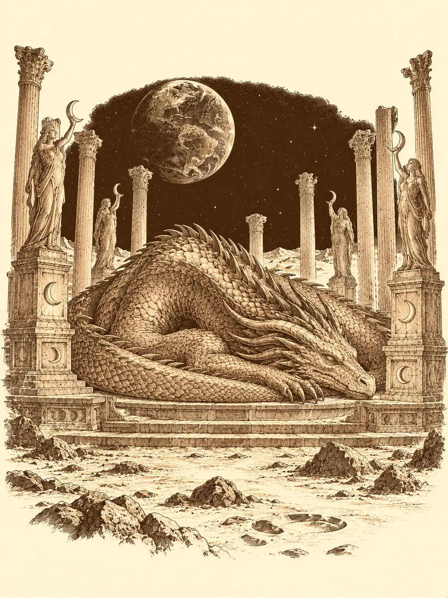

Capítulo 125
El hilo maldito (II)
Libro VIII · El hilo maldito
En Hakara el viento olía a sal y a redes puestas a secar. Para algunos de ellos aquel poblado del norte había sido la primera aldea que habían pisado en la isla, y no había cambiado nada. Ellos sí.
Banzo había perdido recuerdos. Ya no sabía cuáles. En palacio había creído empuñar la Espada del Campeón contra Rua; había subido a la montaña a buscar a sus ancestros y la montaña no le había contestado. Calista tampoco estaba mejor. La matrona había vuelto a visitarla en sueños para enseñarle que podía borrarle la memoria y moverle el cuerpo como a una marioneta, y la tritón había respondido a ese miedo como respondía a todo: encerrándose con los libros. Había encontrado el ritual para consagrar la plata a la luz de la luna y la pista de una sacerdotisa de Selûne en las montañas. Sobre el corazón de la bestia lunar no había encontrado casi nada.
Habían llegado por el portal de Ukio, que por fin volvía a funcionar, con Palayer y Gelbreak. Por el mismo portal habían cruzado Jin, que tenía su mina por aquellas tierras, y Kazuki, que iba camino de su segunda residencia. Se saludaron entre las barcas.
Calista tiró de la manga a Gelbreak y le habló en voz baja. Más gente les vendría bien, pero cuanta más gente supiera lo de los drow, más peligro correría. Bastaba con decirles que iban a ver a una sacerdotisa. El drow gruñó de una manera que Calista ya sabía traducir: tienes razón, pero no pienso decirlo.
Banzo no esperó. Se quitó los guantes y les enseñó las manos a Jin y a Kazuki.
"Si venís con nosotros, os jugáis la vida. Esta misión no es de los cazadores ni de Kuroto. Decidís vosotros".
Kazuki miró los puntitos negros como quien mira una varicela con patas.
"Deberías buscar un clérigo".
"En eso estamos".
Calista apretó los labios. Les pidió que no preguntaran más: cuanto menos supieran, más seguros estarían. Jin dijo que se apuntaba. Kazuki le dio a Banzo un golpecito en el hombro.
"Cuando vine aquí juré proteger todas las sonrisas que pudiera. Y las pocas veces que te he visto últimamente no te he visto sonreír".
Hacía falta comida para el viaje. La tabernera intentó venderle a Calista víveres pasados, y Kazuki le demostró a la tritón que sus disfraces no eran ilusiones sino cambios de verdad, pasándose una mano por la cara para convertirse en un vecino del pueblo; ella le tocó la mejilla, incrédula. No hizo falta. Banzo le dio tres monedas de oro a un chaval que correteaba por el puerto, le pidió que comprara lo necesario y que se quedara con el cambio, y se sentó a remojarse los pies en el agua mirando hacia Brunami mientras esperaba. El niño volvió cargado.
Caminaron varios días sin incidentes hasta un bosque en el que no cantaba ningún pájaro. Jin trepó a lo alto de un árbol para ver la luna, Calista intentó calcular el rumbo por ella y le costó, porque en el mar se orientaba de maravilla y bajo las copas no tanto. Kazuki encontró huellas que iban en la misma dirección. Un búho los seguía de rama en rama sin molestarse en esconderse. Cuando preguntaron en voz alta por la sacerdotisa, el búho echó a volar y se posó junto a una pared de árboles que no era tal. Banzo la atravesó. Era una ilusión.
Al otro lado se abría un claro con una estatua de mujer medio derruida, con túnica, la cara vuelta hacia la luna. Jin, Kazuki y Palayer la reconocieron: Selûne.
Se oyeron palabras de magia detrás de la estatua y un hechizo alcanzó a Gelbreak. El drow lo sacudió de encima. Salió una sacerdotisa con escudo y un martillo enorme, en guardia.
"¿Quiénes son esos drow?".
Palayer se adelantó con el colgante de su diosa en la mano. Venían en busca de ayuda; Eilistraee les había encomendado una misión. La sacerdotisa la examinó a fondo, los ojos, la armadura, los collares. Bajó el escudo.
"Que sepáis que tenéis una araña en el grupo".
"No es una araña", saltó Calista. "Dejó de serlo hace mucho tiempo".
"Sigue perteneciendo a la araña. Si queréis la ayuda de Selûne, él no puede estar presente. No quiero que la madre se entere de las cosas".
Calista le tomó la mano a Gelbreak delante de todos y repitió que no era una araña, que no seguía a ningún dios, y que se lo diría todas las veces que hiciera falta. Banzo, con los dientes apretados, le recordó en voz baja a Calista que en el lago él tampoco había querido ver a la diosa, y que tampoco entonces le habían preguntado su opinión.
"Si voy a ser un problema, me marcho", dijo Gelbreak, y se fue a apoyarse en una roca, lejos.
Kazuki lo siguió. El drow se volvió con los ojos rojos y un dedo en su cara.
"No hace falta que te quedes. Nadie ayuda nunca al drow, así que tampoco me importará. Me gustaría estar solo".
Kazuki se quedó un rato más con las manos a la espalda, tranquilo, y luego volvió con los demás.
Calista enseñó el lingote, que no podía levantar, y le explicó a la sacerdotisa para qué lo querían. Luego, con disimulo, le mostró la palma de la mano.
"Hay dos almas presas en los hilos de esas arañas, las mismas de las que acusas a nuestro compañero. Él nos está ayudando a soltarnos".
La sacerdotisa miró las marcas con una mueca de asco. Preguntó a Palayer si Eilistraee había aceptado aquello, y también al drow. Palayer contestó que su diosa había aceptado al menos hablar con él. La mujer miró hacia la roca y suspiró.
"Bien. Abriré el portal. Y el drow podrá ir con vosotros".
Las escrituras, les explicó, eran ambiguas. Imbuir la plata con la luz de la luna quería decir exactamente eso: ir a la Luna y usar el altar que había allí. Había criaturas. Les dio aire para ocho horas, ni una más; si no volvían antes, no volverían. Luego abrió el paso entre las manos de la estatua y cruzaron todos, Gelbreak el último.
En la Luna no pesaba nada. El suelo era polvo gris y la Tierra colgaba en el cielo negro. Calista intentó animarlos: confiaba en ellos, en sus capacidades, que se mantuvieran juntos. Banzo ni la escuchó.
"Yo me ocupo de la criatura. Vosotros de lo demás".
Gelbreak lo alcanzó y lo agarró del brazo sin fuerza, solo para que se volviera.
"¿Te vas a ir solo a morirte? ¿Conoces este sitio? Pues volvamos con el grupo".
"Iremos más rápido si nos separamos. Vosotros sois los listos".
"Sí, pero no somos tan fuertes".
Banzo se quedó. Buscó huellas y las encontró, hundidas en el polvo como en barro fresco: unas de tres dedos y otras mucho más grandes, de criaturas de muchos tamaños. Calista ató el lingote a la espalda de Jin, que tenía más fuerza que ella, por si la luz de aquel lugar empezaba a hacer su trabajo mientras caminaban. Kazuki y Palayer vieron a lo lejos una luz azul y fueron hacia ella.
Era una construcción de columnas alrededor de un altar, con estatuas de Selûne mirando hacia dentro. En el centro dormía un dragón lunar tan grande que una de sus patas habría aplastado la calle principal de Sho.
Calista se puso blanca. Lo suyo iba más allá del miedo a una bestia: era pánico, de rodillas temblando y respiración rota. Retrocedió dos pasos. Gelbreak se puso delante de ella con el estoque desenvainado. Banzo se quitó las armas y se acercó con Jin y Palayer. Kazuki se colgó el arco a la espalda por si acaso.
El dragón abrió un ojo.
"Este es mi hogar".
No servía a Selûne, dijo; aquel altar era su casa y quien quisiera usar su luz tendría que pagarle. Banzo pensó deprisa. Los dioses tenían dos poderes, le explicó: el suyo propio y el que les daban sus fieles. Él podía traerle fieles. Construirle un altar. Darle el poder de la gente.
Al dragón le gustó. Sonrió, si aquello era una sonrisa.
"Entonces tú serías mi clérigo. Mi sacerdote. Mi heraldo. Dime, heraldo, ¿qué te pide la diosa?".
Banzo se lo dijo todo: la plata, la lágrima, el corazón de una bestia lunar. El dragón clavó las garras en las columnas y todo tembló.
"Así que las diosas han venido por fin a reclamarme. El único corazón que hay aquí es el mío". Los miró uno a uno. "Elegid. Vuestras diosas, o suplicarme".
No le suplicaron. La conversación se rompió y el dragón levantó el vuelo. Nunca llegaron a saber si en la Luna había otras bestias cuyo corazón habría servido igual; el dragón no lo dijo, y ellos no lo preguntaron.
En el aire estaba fuera del alcance de casi todo. Gelbreak volvió invisible a Calista, que se alejó cuanto pudo, aterrada, y desde lejos les mandaba ánimos y ráfagas de viento para ayudarlos a subir. Jin lanzó fuego. Kazuki disparó flechas mágicas que se clavaban en el dragón y le hacían daño cada vez que se movía. Palayer vigilaba el altar.
Banzo saltó y clavó en el vientre de la bestia el arpón que llevaba atado a una cadena, y se quedó colgando a muchos metros del suelo. Aquella cadena se convirtió en un camino. Gelbreak saltó, desapareció en el aire y apareció agarrado al goliat. Jin trepó por los eslabones hasta el lomo de la criatura. El dragón soltó un aliento de hielo que los dejó blancos de escarcha.
Entonces Banzo empezó a columpiarse. Se balanceó en la cadena una vez, dos, tres, se soltó, cayó sobre una de las alas y la destrozó a tajos. El dragón se desplomó y los arrastró a todos con él. El golpe contra el suelo los dejó sin aire.
Calista corrió a curar a Gelbreak. El drow se levantó, le tendió la mano a Banzo y lo ayudó a ponerse en pie. Luego, con una voz que usaba muy pocas veces, le dijo algo que le encendió el pecho. Por un momento la pelea del callejón pareció de otra vida.
Palayer se pegó al cuerpo del dragón y lo castigó una y otra vez con la fuerza de Eilistraee. Banzo fue derecho al cuello.
"Al cuello".
Se lo abrió de lado a lado.
Banzo entró por la herida, apartando vísceras, hasta encontrar un corazón tan grande como él mismo. Lo abrazó y tiró hasta arrancarlo, y salió por la garganta cargándolo, cubierto de sangre.
Jin y Palayer dejaron el lingote sobre el altar del centro. Las luces de las estatuas de Selûne parpadearon y se juntaron en un solo haz que subió y bajó recto sobre la plata. El metal empezó a brillar con una luz blanca. Ya tenían dos de las tres cosas.

Calista no se atrevía ni a mirar el cadáver. Gelbreak la abrazó y notó que le temblaban las manos. Ella se calmó un poco contra él y le dijo que fuera con los demás; él le contestó que no iba a dejarla sola. Mientras tanto, Banzo, Jin y Kazuki arrancaban del dragón dos dientes del tamaño de una cabeza y un dedo, y Palayer comprobaba que la criatura había hecho de aquel lugar su cama sin profanarlo.
Entonces la burbuja de aire empezó a fallar.
Volvieron cargados al sitio por donde habían llegado. No había portal.
"Llama a tu diosa", le dijo Gelbreak a Palayer, agarrándola de la pechera sin fuerza. "Que nos saque de aquí".
"Ya vendrá cuando haga falta".
"¿Quieres morir aquí con todos?".
Palayer cogió el colgante, levantó la vista hacia la Tierra y rezó. Banzo se volvió hacia Calista y le preguntó si se acordaba de algún paso de la danza. Podía ser ridículo. Había que intentarlo todo. La tritón se negó a desnudarse, pero bailó con él. El aire se acababa, a todos les ardía el pecho, y cuando ya no quedaba nada aparecieron de golpe a orillas del lago de las cavernas de plata. Nadie supo si los había traído la plegaria, el baile o la propia diosa.
Eilistraee salió del agua.
"Ah, ya estáis aquí. ¿Habéis traído lo que os pedí?".
Faltaba la lágrima. Calista miró a Palayer, miró a Gelbreak, y el drow dio un paso hacia ella.
"No te va a gustar", le dijo ella. "Luego perdóname".
Le ordenó llorar con una voz que no se podía desobedecer. Gelbreak apretó los dientes, se resistió, y al final le resbaló una gota por la mejilla. Calista la recogió en un frasco. Banzo se había puesto de espaldas delante de él, tapándolo cuanto podía para que nadie lo viera llorar. Calista le dio un beso al drow y le volvió a pedir perdón.
Le entregaron a la diosa el frasco, el corazón y el lingote, que en sus manos no pesaban nada. Las tres cosas brillaron con una luz blanca y se fundieron en una espada larga y curva.
"Esta espada solo podrá usarla mi campeón", dijo Eilistraee, y miró a Gelbreak. "Y mi campeón serás tú".
"No", dijo Calista. "Él no lleva la marca. Me estaba ayudando. No quiero verlo atado a nadie otra vez".
Banzo dio un paso al frente y le ofreció a la diosa quedarse él con la maldición si así liberaba a Calista, y que el drow no tuviera que ser su campeón. Eilistraee lo miró con algo parecido a la ternura.
"Amigo mío, la maldición es cosa vuestra. Yo no puedo quitárosla. Solo os doy las herramientas para liberaros de ella. Y solo puede haber un campeón. Tiene que ser él".
Gelbreak tenía una cara que nadie le había visto nunca, la mirada perdida, como si estuviera pensándolo todo a la vez. Puso un pie sobre el agua, bajó la cabeza y dijo que aceptaba. La diosa le tendió la espada. Él la cogió y levantó la vista con los ojos rojos.
"Pero jamás lucharé para ti".
Eilistraee sonrió.
"Lo harás, pequeño. Cuando llegue el momento".
Y volvió a hundirse en el lago.
Calista agarró a Gelbreak de la manga y tiró de él.
"¿Por qué has aceptado? La marca es mía. Lo he provocado yo".
"No voy a dejarte con esa marca. Y no voy a seguirla".
"¿Y si te reclama? ¿Y si se enfada?".
"Ya he tenido a otras diosas enfadadas conmigo. No acudiré".
Le temblaba el pulso al sujetarlo. Ninguno de los que estaban allí había visto nunca así a la Calista que siempre mantenía la calma.
Banzo le dio las gracias a Palayer; sin ella no habrían llegado nunca hasta la diosa. Faltaba lo más peligroso, dijo: cortar los hilos. Le pidió que no se apartara del nuevo campeón, porque iba a pasarlo mal. La paladina dijo que estaría con ellos. Unos círculos de luz los rodearon y desaparecieron del lago. Tenían la espada. Las marcas seguían en sus manos.
Al día siguiente, Banzo y Gelbreak subieron a una colina a las afueras de Sho. El goliat sacó de la mochila diez pergaminos llenos de borrones donde apenas se leía Querida Rua y alguna palabra más.
"Lo he intentado muchas veces. No me sale tan bien como a Calista".
Al drow se le escapó una sonrisa. Así que por eso pasaba tanto tiempo en palacio. Le pidió perdón por las pullas del otro día, y Banzo también se disculpó. Se sentaron a la sombra y Banzo dictó: que todo iba bien, que pronto volvería, que habían derrotado a un dragón gigantesco, y le contó la batalla entera, la cadena, el salto, el drow levantándolo del suelo. Le preguntó por sus reuniones, le dio ánimos con los nobles, que según Gelbreak eran un coñazo. Que estaba rodeado de compañeros que no dudaban en dar la vida por los demás. Tu guardián, Banzo.
Gelbreak escribió Te quiere, Banzo. Banzo no revisó la carta.
"No puedo verla hasta que me libre de ella". Levantó la mano marcada. "Me hizo creer que sacaba la espada contra Rua".
El drow se encogió. Era todo culpa suya, dijo; lo destruía todo a su alrededor. Hizo ademán de marcharse y Banzo se levantó con una voz que lo clavó al suelo.
"Ni se te ocurra. Antes no teníamos nada, y ahora los dos tenemos algo por lo que luchar. Eres Gelbreak. Compañero de Calista, hermano de un sucio goliat, guerrero de Kuroto. Te necesitamos".
"El precio de los dioses siempre es caro", murmuró el drow. "Ya estuve atado a una diosa. No voy a dejar que me aten a otra. Os liberaré de la maldición, pero no seré el campeón de nadie. Y ese precio lo pagaré yo".
Volvieron a la base en silencio. Encontraron a Calista con su serpiente Wasabi al hombro, guardando unos documentos firmados. Banzo le pidió perdón por haber estado tan a la defensiva. Hablaron de las figuras que crecían en el otro plano: la de ella le llegaba ya a las caderas y la matrona podía moverla hasta ahí; la de él estaba casi completa, solo le faltaba la cara. Cuando había intentado romper sus hilos había sentido que le arrancaban recuerdos de la cabeza, y desde entonces sus ancestros no le hablaban. Calista había olvidado los nombres de sus padres.
Para aliviar el peso, Banzo le preguntó por su hogar. Ella le habló de una ciudad de coral blanco que se hundía hacia el fondo del mar, de una infancia noble de clases interminables, de un rey dragón enorme. Banzo dijo que algún día irían juntos. Luego le dio la carta para Rua, y ella prometió llevarla a palacio. Gelbreak la besó delante de él para cortar las bromas, y Calista se puso roja, recogió a Wasabi y los papeles y se marchó, con el drow detrás.
Al otro lado de una puerta, Osuray lo había escuchado todo.
Osuray había convertido el antiguo cuarto de Calista en su sala de entrenamiento. Clavaba dagas en dibujos: uno de Otakemaru, tal como lo recordaba, y otros dos de Gelbreak y de la tritón. Danifae lo encontró así una tarde, columpiándose en una silla.
La sombra le enseñó el collar de cazador. Había tenido que firmar para que le quitaran los grilletes, pero tenía otros trucos para sus planes. Y le pidió un favor: un clérigo quería sacarlo de aquel cuerpo, y si buscaban en los barrios bajos la manera de separar almas, quería que Danifae protegiera esa información y acabara con los informantes antes de que hablaran.
"Eso es un favor muy grande", dijo la drow, y dio una palmada. "Ya sé. Si te ayudo, serás mi perrito. El niño era el perrito de la tritón. Tú serás el mío".
Osuray creyó que serían socios para fastidiar a la pareja. Danifae le aclaró que no: o la obedecía, o les contaría a los cazadores cómo sacarlo de allí. Osuray aceptó, encantado, y le tendió la mano. Ella le dio unas palmaditas en la cabeza.
Días después volvió, entró en el cuarto, se sentó en la cama y pidió hablar con el niño. Dijo que ya había cumplido lo acordado, sin explicar cómo. Kurobane salió de la oscuridad desconfiado, triste, y se sentó lejos de ella.
"¿Cómo llevas el rechazo? ¿Te duele?".
Él asintió. Danifae le pasó un brazo por los hombros y le habló al oído: tenía algo planeado para esos dos, algo muy divertido, y le proponía participar. No le dijo qué. Por un instante la cara del muchacho sonrió con malicia y ofreció ayudar; Danifae reconoció a Osuray y le dijo que no, que quería al niño. La sombra prometió obligarlo. Entonces ella le dio un papel con una dirección de los barrios bajos.
"Ve tú. Quiero que veas lo que hay allí".
Kurobane guardó el papel con la mirada vacía y dijo que iría al día siguiente. Cuando la drow se fue, le preguntó en silencio a la sombra si sabía qué iba a encontrar. Osuray le dijo que no, y volvió a cubrirlo de oscuridad.
Mientras tanto, otros pagaban sus propios precios. Chilia llevó a Maroxi y a Arwen en una bandada de cuervos hasta una caverna de la Infraoscuridad, a la guarida de un contemplador llamado Dhelshicirv, una pelota flotante llena de ojos que una vez le había convertido a la shadar-kai un brazo en polvo. Ella echó la puerta abajo de una patada, se llevó un rayo y se levantó riéndose. El contemplador abrió con uno de sus ojos el cierre de la Biblia; había un ritual dentro, y para él hacían falta cuatro fuentes de magia poderosas. Maroxi pensó en los cuatro templos que habían levantado la cúpula. Quedó en deber al contemplador un objeto mágico de gran poder, y Dhelshicirv se arrancó un ojo y se lo dio para que lo llevara siempre encima: si no pagaba, desde ese ojo saldría un rayo que lo convertiría en polvo. Se fueron en cuervos justo antes de que llegaran unos escarabajos enormes.
En los barrios bajos, Danifae le presentó a Archi a una mujer de pelo blanco llamada Tiari, que regentaba una taberna clandestina bajo una trampilla. El gnomo se hizo llamar Leopold la Balanza y pagó la ronda con treinta monedas que Ralph acababa de robar. Tiari le encargó inventos para sacar información. Archi dejó a Ralph invisible junto a ellas al marcharse; Tiari lo partió en dos de un tajo de katana. Días después le devolvió las dos mitades, mirándolo de una manera que no necesitaba palabras.
Jin le llevó al forjador del shogunato el dedo del dragón y le pidió dos espadas cortas para sus hijas. Las forjas trabajaban para el ejército, así que se ofreció a ganarse el encargo con sus brazos, firmó un contrato a nombre de la empresa de Yasuoka y pasó horas sujetando las cadenas de un caldero ardiente.
Banzo siguió buscando a sus ancestros hasta que una voz débil le dijo una sola palabra: hogar. Avisó a Sun Gukon y a Gur para que cuidaran de Rua, se despidió de Calista y, en un puerto del norte, subió al barco del viejo pescador que lo había traído a Kuroto. El barco zarpó hacia el continente por rutas que nadie conocía.